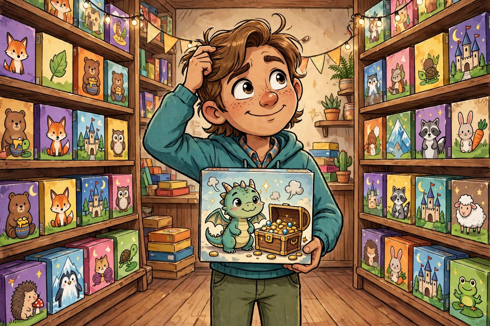

How to pick your first hobby board game

There's a moment every board gamer remembers: standing in front of a wall of game boxes at the store, or scrolling through an online shop with hundreds of titles, and thinking, "I have no idea where to start." The good news is that picking your first hobby game is not about finding the perfect game. It's about avoiding the common mistakes that make a first game land with a thud. Get those right and almost any reasonable choice will work.
Start with your people, not the game
The single most important factor in whether a game gets played isn't the game — it's the group. Before you buy anything, think about who will actually be at the table. How many of you are there? Most hobby games list a player range on the box, and that range matters. A game that plays two to six might be brilliant with five and a drag with two. Check what people say about your player count specifically, not just the number printed on the box.
Next, be honest about attention spans. Are your friends the type to happily learn a new system for twenty minutes before playing, or will half of them check their phones the moment the rulebook opens? There's no wrong answer, but the two groups need very different games. A game that's beloved by hobbyists can still be a terrible choice for your particular table if it asks more patience than your group has to give.
Match the theme to the room
Mechanics are what a game does; theme is what it feels like. For a first hobby game, theme matters more than most veterans admit. A game about trading resources in a fictional world lands differently with non-gamers than a game about building train routes across a familiar country — even if the underlying decisions are similar. Familiar, friendly themes lower the barrier. If your group has no hobby background, look for themes people already understand: travel, food, exploration, mystery. Save the dense economic simulations for game three.
The traps new buyers fall into
Trap 1: Buying for the gamer you want to be. The epic-looking box with the six-hour playtime is tempting. But if your group meets for two hours on a weeknight, that game will sit on your shelf and make you feel guilty. Buy for the schedule you have, not the one you wish you had.
Trap 2: Confusing complexity with quality. New gamers often assume a heavier game is a better game. It's not — weight is a preference, like spice. A light game played twenty times beats a heavy game played once. The best first game is one you'll actually set up again.
Trap 3: Ignoring teach time. Rulebooks are longer than the box's playtime suggests. A "60-minute game" might need a 20-minute teach on your first play. For a first outing, look for games you can explain in about five minutes. If you can't summarize the goal in one sentence, it's probably not your first game.
Trap 4: Buying before trying. If your city has a board game cafe, a meetup group, or a library that lends games, use them. Playing a game once teaches you more than ten reviews. Some stores even run demo nights. There's no substitute for sitting down and feeling how a game plays.
A simple shortlist approach
Here's a practical way to narrow things down. First, filter by your usual player count — not the box range, but what people say is best at your count. Second, filter by teach time: can you learn it from a short video or a quick read? Third, pick the theme your group will talk about during the game, not just tolerate. Then read a couple of reviews focused on whether the game is fun on a first play, not on its tenth. Some games are growers; your first game shouldn't be one. You want a game that's fun while you're still figuring it out.
One game is not a lifetime commitment
The beautiful thing about the hobby is that games hold their value socially even when you outgrow them. The game that teaches your group how to play hobby games will eventually feel too simple — and that's a victory, not a failure. It means you've leveled up. Many gamers keep their first game precisely because it's the perfect introduction for the next new player who joins the table.
So pick something approachable, matched to your group, with a theme that makes people curious. Then get it to the table fast — momentum matters more than research. If you want a vocabulary for what makes a first game work, read our guide to gateway games next.